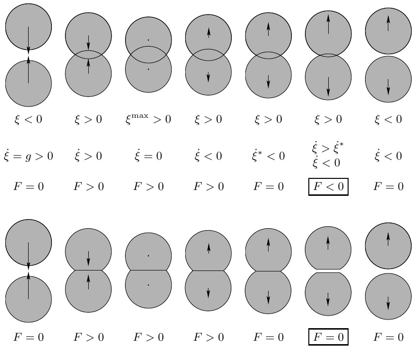
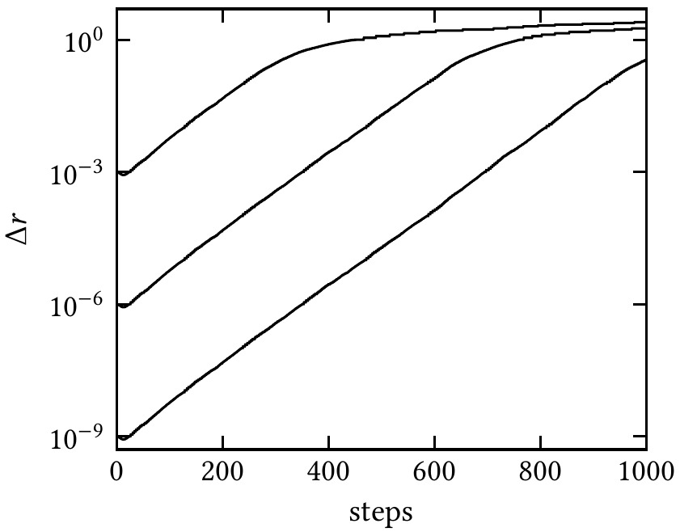

CLASE 7 - GEOFISICA DE MEDIOS GRANULARES
THOMAS GALLOT,
CAMILA SEDOFEITO
Instituto de Fisica,
Facultad de Ciencias,
Universidad de la Republica
Cuando se comprime y luego se descarga un ensemble granular, la curva fuerza-deformacion presenta un ciclo de histeresis.
El area sombreada $\Delta E$ es la energia disipada por ciclo. Puede quedar una deformacion residual $\delta_r$.
La energia disipada por ciclo es:
Para una colision entre dos esferas (clase 6):
Nesterenko, Dynamics of Heterogeneous Materials (2001)
Introducido por Cundall (1971) y formalizado por Cundall y Strack (1979). Simula el movimiento de cada grano resolviendo las ecuaciones de Newton.
Contacto si $\xi_{ij} > 0$.
Fuerza entre granos en contacto:
Tres instancias en cada paso temporal:
Cundall y Strack, Geotechnique 29 (1979)
Existen tres grandes enfoques para simular medios granulares a escala del grano:
Andreotti, Forterre, Pouliquen, Granular Media (2013), Box p.29-30.
Linear dashpot (resorte + amortiguador)
Coeficiente de restitucion:
Esferas viscoelasticas (Hertz 1882 + Brilliantov-Poschel)
con $\dfrac{1}{R^{\text{eff}}} = \dfrac{1}{R_i} + \dfrac{1}{R_j}$, $m^{\text{eff}} = \dfrac{m_i m_j}{m_i + m_j}$
Si los materiales son diferentes:

Poschel y Schwager, Computational Granular Dynamics (2005)
Secuencia de una colision binaria: aproximacion, compresion maxima, separacion.
Solucion: forzar $F \geq 0$:
Velocidad relativa tangencial al contacto:
$v_{\text{rel}}^t = (\mathbf{v}_j - \mathbf{v}_i) \cdot \mathbf{e}_{ij}^t + R_i\omega_i + R_j\omega_j$
Modelo de Haff y Werner (1986)
Modelo de Cundall y Strack (1979)
donde el desplazamiento tangencial acumulado es: $\zeta(t) = \displaystyle\int_{t_c}^{t} v_{\text{rel}}^t \, dt'$
El modelo de Cundall-Strack introduce un resorte tangencial que almacena la historia del desplazamiento relativo durante el contacto.
Cono de Coulomb: la region admisible para $(F^n, F^t)$.
Algoritmo Velocity-Verlet (Velocity-Stormer):
Eleccion del paso temporal $\Delta t$:
Exponente de Lyapunov > 0

Allen y Tildesley, Computer Simulation of Liquids (2017)
Clase 8: Friccion granular: Coulomb-Amontons
Bibliografia: Duran, Sands, Powders, and Grains -- Cap. 3; Poschel y Schwager, Computational Granular Dynamics (2005)